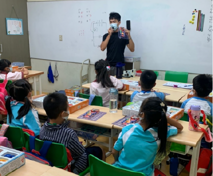
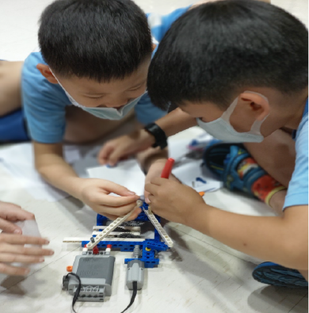
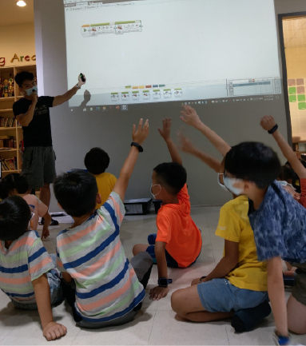
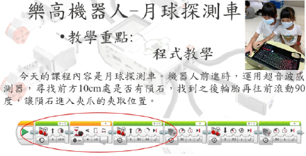

電子積木1th Grade 動力機械2th Grade EV3機械人3th Grade EV3機械人4~6th Grade
這是一年級的電子積木課程，主要目的是上孩子們在拼裝的過程中，可以認識到基本的電子零件， 觀察並實驗出其中的物理現象。
發展孩子們的手指肌力與專注力，每個單元都會有不同的機械結構，在經過老師的講解與引導後， 讓孩子發揮創意改裝與設計出不同的構造。
程式邏輯的基礎培養，除了可以製作出各具特色的機械人外，讓孩子們試著理解簡易指令的用途， 並且實際操作運行，建立手動與主動思考問答的能力。

在孩子們學了一年的EV3機械人後，我們更進階的教導它們更複雜的機械人結構，並且要求可以獨力完成指令， 並且對於判斷與迴圈結構有深刻的理解。
